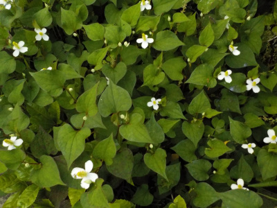
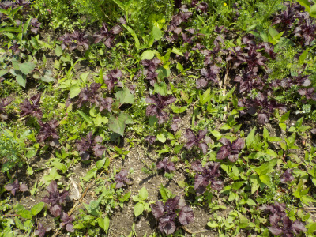
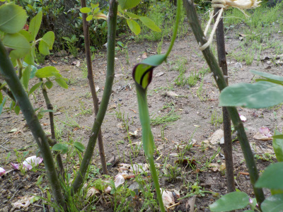
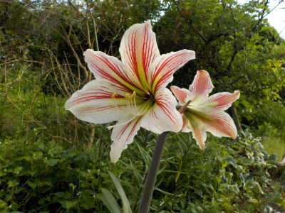
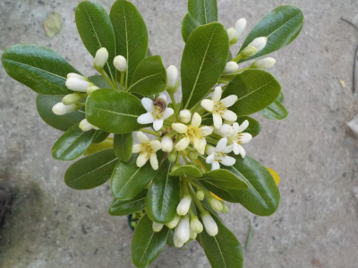
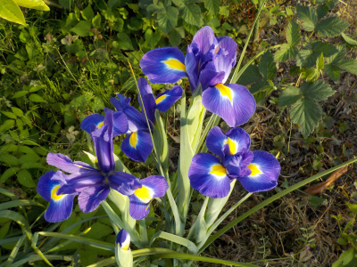
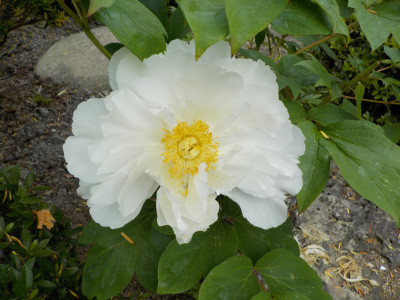
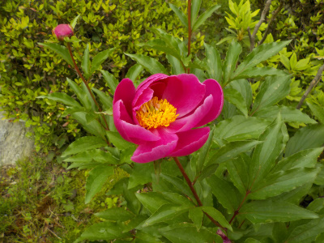

ドクダミの絨毯を作りたいって思いました。
2023/05/25

ドクダミが茂っていてキレイです。木や花の隙間に生えてるのは雑草な気分ですが、一面に沢山あるとグランドカバーになってて見栄えがいいです。
ドクダミをもっと増やしたいと思いましたが、スパースがないかな。
2023/05/25

ドクダミが茂っていてキレイです。木や花の隙間に生えてるのは雑草な気分ですが、一面に沢山あるとグランドカバーになってて見栄えがいいです。
ドクダミをもっと増やしたいと思いましたが、スパースがないかな。
2023/05/21

去年のこぼれ種が沢山芽を出して育っています。沢山あるので何かに使いたいと思うんですが、アイデアが浮かばないです。
フリカケを作るとおかずを食べなくなるので作りたくない。ジュースは糖分が気になるし、料理に香料で入れるのは少ししか使わない。
あれこれ思っていると使わないので、なんでもかんでも作ることにします。
一度に沢山食べなければいいんだし、色んな食べ方をすれば問題ないでしょう。
2023/05/20

山に行くとこんな草がよく生えているんですが、庭でも生えるんですね。
抜きました。
2023/05/20

花びらが厚くてボリュームがあっていいですね。
増やしたいけど、大きい鉢と置き場所が必要なので無理かな。
2023/05/10

以前に庭に生えていた木の苗を、抜いて鉢で育てたものです。
なかなかいい感じの花が咲きました。
この木は観賞用にキープしようと思います。
2023/05/05

色が濃くて発色がいいですね。
2023/05/05

ボタンの開花時期が早くなっているので、ゴールデンウィークには花が散っていたんですが、今年は子供の日にボタンの花が見れました。
ちょっと形がイビツですね。生育不良で開花が遅くなったと思われます。
でも今年はボタンが長く楽しめて良かった。

ボタンの次は芍薬の時期です。
過去の日記
畑仕事じゃないよ。